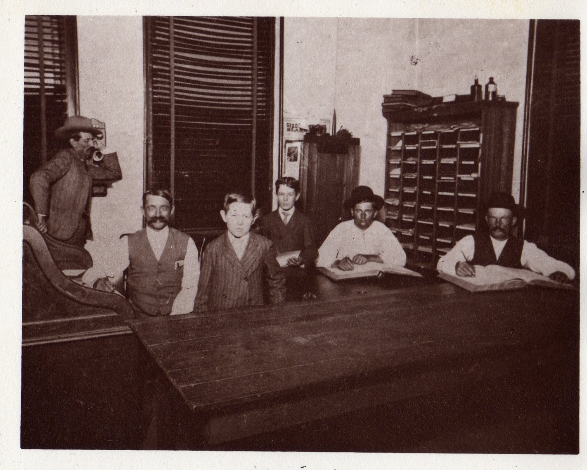
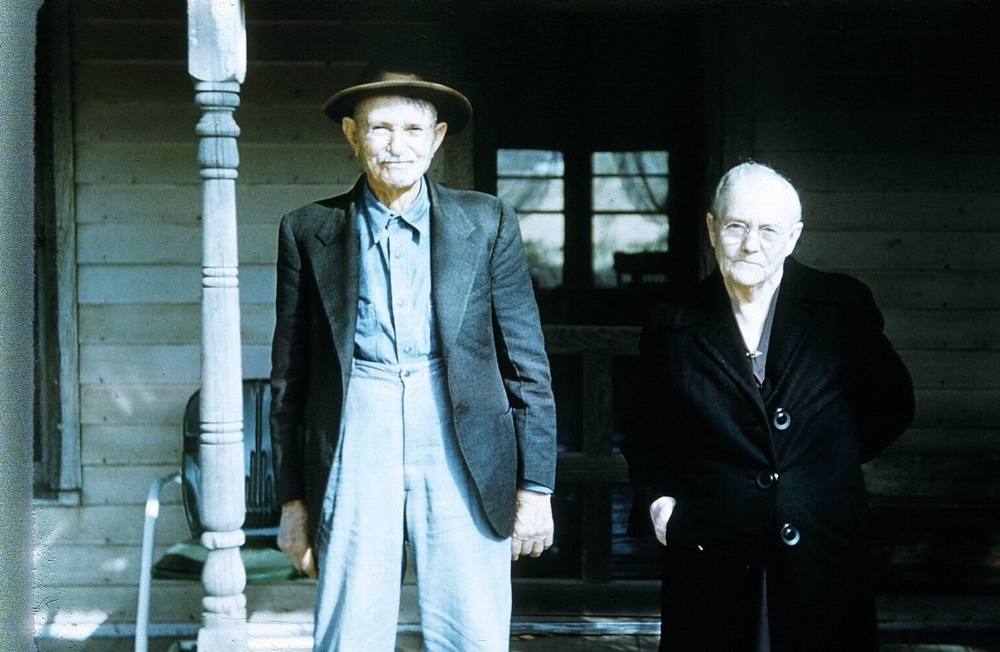

1865–1964
[….] Additions and corrections by Theodore W. Cooley, 2006.
I was born September 2, 1865, in Johnson County, Kansas. It is located near the Missouri line not far south of Kansas City. My brother, Samuel Arnstead [Armstead], was born there on February 23, 1867. After the Civil War was over and Dad [William James Coolley, b. 9 Sept. 1818, Dearborn Co. IN] got out of the army, [Co. H/A, 9th Kansas Vol. Cavalry] he owned a farm near Olathe, the county seat of Johnson County. While we were living there the lightening struck a hay stack, killing two cows and a team of mules.
Then we moved to Columbus, Kansas, to a farm on Cherry Creek just west of town.
My mother’s parents, Grandpa and Grandma Ray, [Andrew B. Ray, b. 1801, KY, and Judith Reeds Ray, b. 1803? KY] owned a large farm near Olathe. [Monticello Ts.] They had a big, fine stone house on it. I remember that house well. I always liked to visit my grandparents.
I can remember my mother [Lucy Margaret Ray Wiggins, b. 8 July 1831, KY] had a spinning wheel. I have watched her take wool, card it, spin it into threads, and weave it on a loom into cloth. My sister, Almedia [Viola], was born December 23, 1868.
When I was about five or six years old, my half brother, Andrew [R. Wiggins] (Mother’s son) was using an ax making a yoke for a team of oxen. I grabbed the ax, and running with it, fell and cut my arm. Andrew held my arm tight to stop too much bleeding as he took me to the house.
Nearby a young man was plowing, breaking sod, who had been a surgeon in the army during the Civil War. Dad called him to come there quickly. He put soot from the chimney on my arm to stop the bleeding and then took seventeen stitches in my arm. Lucky for me that doctor was right there close. I still have the scar on my arm.
While we lived at Columbus, my Mother’s boy, Andrew, died [b. 6 Nov 1855, d. 4 Apr 1872, buried block 94, Olathe]. We took him back to Olathe to bury him. He was a grown young man.
My half sister, Nannie [Nancy Arnette, b. 17 July 1859], Dad’s daughter, was a grown woman by then. She met and married Riley Kirk [7 March 1875] while we lived at Columbus [Galena?]. He was a worker in the coal mines there.
We moved to Montgomery County, Kansas, to a farm near Elk City in 1872 when I was 7 years old. Dad’s horses took sick with a contagious horse disease and all died with it, so he could not farm. We moved into town and Dad ran a blacksmith shop. He had learned the blacksmith trade in Chicago when he was a young man. Dad made the horse shoes and the nails too. My job was to help him. I would be out playing marbles and when he needed me he would pound the hammer on the end of the anvil. I’d get up and run to help him. I’d hand him some tool or hold one end of a piece of iron while he held another end and welded them together.
Dad never had much money, and he had some old-fashioned ideas so he would buy us old style swallow tail coats for us boys. This made us look queer so that the kids at school always made fun of us. I went to school when we lived in Elk City. One time I was a bad boy in school and the teacher made me sit under his desk. I bumped the desk and caused the bottle of ink on the desk to spill over. Once I was sitting behind two girls. I took a pin and stuck them, then threw the pin away and told the teacher I had no pin so I couldn’t have stuck the girls.
One of my school mates was Harry Wooodring. Many years later his son, also named Harry Woodring, was elected governor of Kansas.
The first circus I ever saw while we lived at Elk City, I carried water for the elephants to earn a ticket to the circus.
My sister Lily was born at Elk City, in 1873 [Lillie Jane, b. 26 Nov ].
Mother took us children and went to Olathe to put us in school. One of my teachers there was a niece of John P. St. John. He was a lawyer there in Olathe and some years later was governor of Kansas.
I liked school that year. I was very good in spelling and arithmetic. I still like arithmetic. When I am talking with old fellows now, about ages or dates I can add up the numbers in my head before they can figure it out. I was doing so well in spelling that a girl and I were tied at spelling the most words correctly. The Dad came to get us and we moved to Galena, Kansas. I was entering my teens by then and never went to school after that.
There was much mining around Galena. One time some of us boys crawled back into an old abandoned iron mine. We had a good time exploring.
Dad worked running a windlass at a mine. He also ran a hoist with a blind horse we had. He drove the horse around and around to pull the hoist up from the mine.
My Mother kept boarders, men who worked in the mines. Among them were two young men who became acquainted with two of my older sisters. Ella, [Lucinda Eleanor Wiggins, b. 26 Aug 1860] my Mother’s daughter, married William Gross. Emma, [Rheuana May, b. 10 Jan 1862] my Dad’s daughter, married John Cumberland [25 Apr 1880].
I was big enough at 14 to do work in the mines. I was strong and always could do lots of work. We were working a led mine called the Baker Diggins. We had a lease on a certain number of lots. We took out a pocket of lead, 3000 lbs. Sometimes the lead was in rocks other times was pure lead in chunks.
Once I fell into a mine. My father was running a windlass. My brother Sam and a brother-in-law, John Cumberland, were back in a drift in the mine. Dad put me in a bucket to go down to help work the drift in the lead mine. Unknown to Dad a pin on the windlass was worn and I, in the bucket, fell fast into the mine. I went into the water but didn’t to under, so I crawled out of the bucket onto the drift. They got another windlass and pulled my out. I was shaken up a bit but not hurt badly.
My brother Sam was always a miner. Years later [1906] he was killed in a lead mine at Webb city, Missouri. My wife and I raised his two daughters.
My father, William James Cool[l]ey , came to Kansas in 1859 [to help make it a free state] with his wife and children and bought a farm near Auburn, near Topeka. He had three children with him and I think they were good-sized. He married his first wife in Indiana [Hanna M. (A.?), born 15 Aug 1818, married before 1845, died 10 Jan 1855] and the children [Mary A., Alexander M., James Harvard] had possibly been born there [Alex and Harvard born Marion Co., Iowa]. There were two boys and a girl. The girl was Molly, and the boys were Elec and Harve. I also know he had lost a wife [died in childbirth 4 Dec. 1855] in Iowa who had one child, a baby girl, Dovie [Amanda P.]. Her mother’s people kept her. I can remember seeing pictures of her when I was young, as her family would write my Dad and sometimes sent pictures.
Dad’s brother, Sam [Samuel Means Coolley], lived in Iowa. I think the family originally came from Pennsylvania. Dad always said his name had been spelled with two “l’s” (Coolley) but by a mistake the spelling was wrong on his official army papers so he had to spell it that way to draw his pension. During the Civil War Dad joined the Union Army in the 9th Kansas Company H, Volunteer Cavalry under Colonel Moonlight. Major General Blunt was the commanding officer. Dad did much scouting along the Kansas-Missouri border. He had a horse trained to jump roads or obstacles in the way.
One day he and an Indian named Sam Masier Smith were scouting together. The Rebels (Quantrill’s gang) shot the Indian’s horse from under him. The Indian said to Dad “Go on ranger, -- get away! Indian crawl like a snake and get away too.” They did.
Dad furnished his own horse in the army. It was an iron gray horse named Pete and very well trained. Dad could say “Lay down Pete” and he would lay down real still. When the war was over he traded Pete for a little gray mare. Dad was in the army three years and three months. [Volunteer Enlistment 23 March 1863, medical discharge 17 May 1864, total one year and three months]
Dad voted his first vote for Tippecanoe Harrison in 1840 and his last vote for Ben Harrison in 1888. That is when I cast my first vote.
Dad was about my height, 5 feet 10 1/2 inches. His hair and eyes were black. I remember his as having pure white hair. He wore a long beard that was white too. He was blind in his left eye, also his right had was crippled as a result of Civil War injuries.
I never met any of my Dad’s relatives. His brother Sam came to visit us once but I was not at home at the time. Harve and I were gone to Illinois. I never even knew the names of any of Dad’s other relatives.
When Dad married by Mother he had four children yet a home, and she raised them The boys were Elec and Harve, and the girls were Nannie and Emma. The oldest girl, Molly, was grown already and married to a Jontie Fuller [Johnson M. Fuller on 7 Oct. 1863]. He bought and sold horses. They had children: Preston, Charlie, and Ellie. I never knew Molly very well. I don’t know what happened to Dovie, as I never kept up with her after I was older. I often wondered about her. [She married a first cousin in Iowa, Charles Henry Coolley, a son of Samuel Coolley, having one child, a daughter, Emma Coolley (Beers), who remained in touch first with the Musser family and then with Mary Ellen Osborne Cooley until Emma’s death in the late 1970’s.]
Elec [Alexander M., born July 1848] married Sarah Smith [30 May 1871 She was born in 1853]. We called her Sally. She had twin brothers, Chase and Grant Smith, who lived in the edge of Missouri. Elec and his wife moved to Colorado where he worked in the lead mines near Leadville. After my parents died, I failed to keep in touch with Elec’s family, but I know he had several children. I heard that one boy was named Frank. Elec was a small man like my son, Jim.
Harve was a little taller than me, but was light-complexioned. He married Hattie [Harriet] de Neil, [13 Apr 1878] daughter of Jimmy de Neil. All that family had died with T.B. They had three children: Arthur, [d. 1901] Elsie, [d. 1934] and James [d. 1960]. They moved to Danville, Illinois in 1881. Harve died in 1927. He never had any grandchildren. [Grandson Lowell Cooley with three sons of his own was in Danville, Ill, in 1982 and in touch with Ted]
Nannie married Riley Kirk of Columbus, Kansas, where they lived for many years, later moving to Bridgeport, Nebraska where they died, him in 1929 and her in 1940. Their children were: Mary, Charlie, Effie, Elsie, Henry, Arthur, and Sadie.
Emma married John Cumberland. Their children were: Sadie, Mable, and Charlie. Emma lived in Los Angeles until she died in 1954 at 92 years of age.
My sister Lily married a man named Charley Fuller [14 June 1891], but he was no relation to the Jontie Fuller that married one of my Dad’s older girls, Molly. One of my half-sister Nannie’s girls, Sadie, married a man named Fuller and they were cousins. He was the son of Molly and Jontie Fuller. I think Nannie and Emma were full sisters. Their mother had just those two children, and she died when Emma was a baby.[10 Jan 1862] That was before my Dad married my Mother.
Some of the family say my Mother told the older sisters that she was my Dad’s fifth wife; that all the others died of child-birth.[3 in childbirth or complications of such, one apparently in complications of pregnancy] I don’t know about such things. That was women folks talk. I do know that in those days good doctors were hard to come by, and women did often die of child-birth.
When Dad met Mother she was running a boarding house at Shannietown near Olathe, Kansas, boarding Civil War soldiers who were stationed there. She was a widow. Her name was Lucy Margaret [Ray] Wiggins. Her husband, Philip Wiggins was killed in the Civil War. [Co. H, 12 KS Vol. Inf. (Jayhawk Reg.) He will killed in Quantrell’s raid on Olathe 7 Sept 1862.]
I think Mother and Dad went to Olathe to get married. [by J. P. Hill on 1 Nov 1863, filed on pg. A-32 of Johnson Co. records.] I was their oldest child. I had a brother, Samuel Arnstead. We called him Arn at home, but after he was grown he went by the name Sam. He was six feet three inches tall and a big boned man.
My Mother was a large fleshy woman, five feet seven inches tall and weighed 200 lbs. She talked a lot about her relatives. They had lived in Kentucky. Her Grandmother on her mother’s side was related to Daniel Boone; she always said “to the McCartys and Daniel Boone.” Grandma Ray’s ancestors had originally come from England and Grandpa Ray’s came from Ireland.
In 1881 when I was 16 years old my brother, Harve, moved back to Danville, Illinois. He shipped all their household goods in a boxcar and went along with the things in the car. When he was located, I went along with his wife and children on the train from Columbus, Kansas to Danville. The Mississippi River was a mile wide where we crossed. I looked out the windows on one side and then the other. It was during this time when I was gone from home that my Uncle Sam, Dad’s brother, came to visit us.
I stayed in Danville and worked for my brother, Harve, for almost a year. There I got $18 a month. I helped him lay tile to drain his farm land. While I was there, I was baptized in the Illinois River. Several other young fellows were baptized at the same time.
I never saw Harve after I helped him move to Illinois, but we always wrote.
When I was 17 years old, I went with a brother-in-law, William Gross, to the Ozarks. We went through Indian Medical Springs, Missouri, on to Springfield. We worked a while on a new railroad that was being build. Then we went on to Arkansas driving a team of mules to a wagon. This was in 1882. The most interesting sight was the old Pea Ridge Battlefield in Arkansas where a battle had been fought in 1865 [March 7-8, 1862]. We could still see where the tops of the trees had been shot off.
We stayed several months in the Ozarks, sightseeing and working. We saw the roaring River in Missouri, where a river comes out of the side of a steep hill.
Grandpa Ray was a fine man. Grandma was a nice person, too, but she had a high temper. A sister of Mother’s married Charley Page. He owned a farm adjoining Grandpa’s farm. His wife died and he raised the children, Elmer, Danny, and Lula. He never married again. When I was sheriff and in California on business I went to see Uncle Charley Page. He was living in Los Angles then.
Mother and Dad both belonged to the Christian Church. We never ate a meal in our home but what Dad first ask the blessing or had someone else say it. One time Dad had a Negro working for him and he ask him to ask the blessing. I wouldn’t wonder I didn’t get a licking, because I wouldn’t eat with them and I got up and walked out, but I didn’t.
While we lived at Galena, Kansas, my Dad got his Civil War pension [pen. # 179,011]. He got 15 hundred dollars back pension, bought a 173 acre farm near Galena, bought horses and equipment to farm. The road ran through the farm, timber on one side of the road and farm land on the other. There was a good log house, and lots of sassfrass sprouts were always coming up in the fields. Then Dad traded it for another farm over near Independence, Kansas.
When my parents lived near Tyro, Kansas, one of their neighbors was the Musser family. Jim Musser and I became good friends. Two of his older sisters married George and Marion Gross, brothers to my brother-in-law William Gross, who was married to by half sister, Ellie. Ellie’s children were three girls and a boy, Maud, Pearl, Ethel, and Merlin.
After I returned to Kansas from the Ozarks, I continued doing railroad work. I worked as a section hand on the railroad. I was the youngest fellow in the crew and the others called me “Kid.”
When I was working south of Wellington, Kansas, my boss and I once went up the tracks some miles on a handcar. No trains were due for several hours, so we thought it was safe. He went off quail hunting. I was just monkeying along the tracks, seeing if any bolts needed to be tightened. Suddenly I heard a train coming! I really made haste to get that handcar off the tracks, and to push it down into the ditch. The boss returned and told me I did the right thing. We would have been in trouble had the train smashed that handcar.
When the railroad was being build between Dexter and Arkansas City, I helped to lay the track. I was a spiker. When we had finished the railroad into Arkansas City, there was a flatcar full of cases of beer on the tracks, for the section-hands to drink if they wished. That was when Kansas was “dry” too. I drank one can, but some of the fellows drank till they felt pretty funny.
I wanted some more adventure. I quit railroading and went down into the Indian Territory. I got a job at breaking prairie with three yoke of oxen, near the Verdigris River southeast of Coffeyville.
Frank Dalton was U.S. Marshall at that time. He asked me to be a posse man for him. The Dalton brothers had been reared near Coffeyville, and I knew them well. We posse men worked nights, mostly, We would surround a place and watch to catch a man.
Frank Dalton was killed while he was U.S. Marshall. His brothers turned outlaw later on, after he was killed. They first began to bootleg liquor to the Osage Indians. Then they robbed the bank at Coffeyville and began to commit other crimes. Indian Territory was a wild place in those days, and anyone inclined to be bad had plenty of opportunity. I knew several outlaws, such as Henry Starr, an Indian, Kid Wilson and others.

WT Cooley as Sheriff in Oklahoma, about 1922.
When I was a young man, 20 years old, in 1885-86 I rode about two years as a posseman for Judge Parker. I never met Judge Parker myself, but I was down to Fort Smith several times. I saw Belle Starr once. She was a fine-looking woman. She wore a man’s hat and six-shooters, but was dressed in women’s clothing. If you hadn’t seen the hat and six-shooters, you wouldn’t have thought she was an outlaw. She had come to Fort Smith [possibly Guthrie] to get one of her husbands out of jail for shooting Felix Griffin.
I never saw a hanging. I never drawed a gun on a person but what I got him. I never killed anyone, and I never wanted to. I generally rode with U. S. Deputy Marshals Frank Dalton and Bud Heady. I knew Frank Dalton and Bob personally. I was living in the Osage country near Skiatook. Frank was a lawman and a good one. He took prisoners to Fort Smith. Bob got appointed, too. Bob was the best rifle shot I ever saw. He shot from the hip,, never aimed. I didn’t get to know the others, but two Dalton brothers came to get the ones who killed Frank.
I did more guarding than anything else. We had a chuck wagon, a horse wrangler and everything. We had to camp out with the prisoners. We handcuffed them and legged them together. One big Negro, we had to chain to the wagon wheel. It was all wild country then, lots of killings, lots in Fort Smith too. Judge Parker in the U. S. court was the only judge in the whole Indian country. Oklahoma was part of it, it wasn’t opened then. I can’t say that I liked the job of posseman. We hunted down outlaws like dogs… in fact it was the worst part of my life. Seemed like someone was always going to be hanged.
Judge Parker hung lots of men, lots of them, innocent too….circumstantial evidence. If I were on a jury, I don’t believe I’d ever convict a man on circumstantial evidence. Judge Parker had some tough ones. He’d say ‘I sentence you to hang by the neck until you are DEAD…..DEAD…..DEAD.‘ That’s just the way he would say it. Oh, yes, he’d give some of them 30 days.
I met several girls in Indian Territory that I liked. One was a half-breed Indian. She was very pretty and I liked to dance with her. She was a good dancer. At a big two-day Fourth of July celebration I met a pretty girl who was blind. She was a graduate of Carlyle and was well educated in Braille. I took her to dances a few times. Later I worked for her family. I sheared sheep for her brother. I learned from her to read and write in Braille. She wrote letters to me for some time after that.
Once when I went home on a visit, Grandma Ray was visiting there. I was sick and the doctor gave me some medicine to take every so many hours. I took it all at once, then was so ill that I was unconscious. When I came to , Grandma said, “Willie, I thought you had died.” I replied, “No, I will not die for a long time yet.” I guess I was right about that.
When I was 20 years old, I came home on a visit and met Clara [May] Tomlinson at a Literary meeting at a school house. She was 16 years old, only five feet tall, blond and pretty. She had been going to school with my sister, Media, and they were good friends. I borrowed a buggy and horse from another fellow to take her buggy riding. I went to see her once or twice before her mother died [19 Nov 1887]. Her little brothers and sisters all liked me.
After I had known her for a year or so, I rode my pony over to her house one day, and the little kids said to me, “You don’t need to bother to tie your pony. He feels at home here.” But her [older] brother Ward did not like me, even after Clara and I were married.
He was visiting us once many years later, when I was running for sheriff. He told Clara he could see I was going to get elected, for the common talk among people was how much everybody liked me. I think he had begun to like me himself then.
When we got married Clara’s Pa gave her a mare and a colt. So I then had a team, for I already had one horse, my cow pony. The Justice of Peace performed the ceremony. His name was Pittman. The spring before I married I rented a farm and planted corn. Clara and I got married when the corn was looking like a good crop. We were married July 31, 1888 at Havana, Kansas [John Tomlinson home]. Then we moved onto the farm near Tyro. We didn’t live there very long. I rented a farm northeast of Sedan where there was a better house.
I remember one of our wedding presents was a beautiful wrought iron clock. One of my mother’s sisters [Sarah J.] married a man named Tom Wheeler. Their daughter, Lou Bookins, gave us the clock. It is a real antique now. A design in wrought iron on each side of the face was in the shape of the Virgin Mary. There was a matching wrought iron shelf to set it on, but we lost the self somehow.
Directly after we married, my sister Media married my good friend Jim Musser. We four were always very close, a beautiful friendship that lasted all our lives.
I soon began taking an interest in politics. I helped Bert McGuire get elected county attorney of Chautauqua County. I got pretty well acquainted around Sedan. Our oldest daughter, Lizzie [Elizabeth Margaret], was born on the farm northeast of Sedan on August 7, 1889.
We lived near Peru, Kansas, for a year, then moved to the Indian Territory near Skiatook. I worked as a cow hand on the Appleby Ranch in the Osage country. After her husband died, she married her foreman. We called her ‘Mrs. Geese Captain.’ She was a French woman, who as a child had been captured by the Indians and raised as an Osage. Her sons-in-law Hoots and Silas Rarey raised cattle and horses. I helped fence the ranch, dug post holes, stacked hay.
At the Appleby Ranch the Daltons ate dinner. She kept her money in a cotton sack hanging on the wall. The never bothered it if they noticed it. No marshals rode by and I think they would have looked the other way if they had.
My Mother and Dad were visiting us at Skiatook when our boy Jim [James Thomas] was born, July 19, 1891.
My Mother was very good a taking care of women when their babies were born. After I was grown up I knew that she often went about on child-birth cases. She and Dad lived at Sedan, Kansas, and came down to stay with us at Skiatook because we knew we couldn’t get a doctor. They stayed with us 3 or 4 weeks.
We were living in a big frame house that had a fireplace. The mosquitoes came down the chimney to the fireplace and nearly ate us up.
Jim and Media Musser lived near Skiatook for a while, also my brother Arn was near there too. Arn had married Sadie Tomlinson, a sister to my wife.
We had some hound dogs, and did quite a bit of hunting. One time my hounds and another fellow and his hounds caught a big wild boar.
Arn had a dog named Carlo and we had a dog named Jewel. The dogs ran a deer into the water in the river. The dogs tried to attack the deer, but it stood its ground. It stood on its hind feet and pawed at the dogs till Arn’s dog was drowned in the water. The deer’s sharp hoofs cut a gash on the shoulder of our dog.
Jewel was a real smart dog. I could say to her, “Go get the cows: and she would go to the pasture and drive them in. She was really Clara’s dog. Her Grandpa Haag had given her the dog. The only grand parents I ever knew were my Mother’s parents, Grandpa and Grandma Ray. I knew some of her other relatives too. Mother had two brothers, Jack [Andrew Jackson, b. 41?, Ill, d 77?] and Tom [Thomas B. Ray b. 24?, D 24 July 75]. She had two sisters. One was named Almedia [Caroline, b 11 Nov 33, d 10 May 1904], who married Charley Page [2 Sept. 1861]. The other sister [Sarah J., b. 21 July 1829, d 18 Nov 1865,] married Tom [George W.] Wheeler [10 Nov 1846]. [Another sister, Lucinda Catharine, is not mentioned in this narrative.]do not know when Grandpa Ray died [10 Apr 1872], but Grandma Ray lived till I was a grown man [d. 21 March 1895]. She often visited us. I was very fond of her.
My Aunt Almedia Page had two boys, Elmer and Dan, and one girl, Lula. Lula was crippled and was always an old maid.
Aunt Almedia and Uncle Charley Page lived on a farm adjoining Grandma’s farm near Olathe. After Aunt Almedia died, Uncle Charley Page looked after Grandma. Most of her property was spent in caring for her in old age. When Grandma’s estate was settled up. Charley Page sent me $90 as my part of my Mother’s share of Grandma’s estate. My brother and three sisters, Media, Lily, and Ellie (Mother’s girl by her first husband) each received the same amount.
My father died when he was 74 years old from a rupture [18 Mar 1892]. We were living east of Caney then. I got the word and went to Sedan to the funeral. He was buried in the Sedan cemetery [old cemetery a mile SW Sedan, east side with Union marker.].
Shortly after that, in early 1893, brother Arn took Mother by wagon and team on a trip to northern Kansas to visit my sister Lily who was married to Charley Fuller. They were living in northern Kansas at that time. Mother took sick there and died and was buried there [23 July 1892, believed Webster, Rooks, Co. grave moved and lost].
I made the run at the opening of the Cherokee Strip September 16, 1893 four miles east of Rice‘s store near Hennessey in the boot of Old Oklahoma.. I was with a bunch of fellows from Sedan. My brother-in-law, Jim Musser, made the run too, but he was in a different place. He got a claim near Enid, and moved there. He made a sod house to live in at first.
We had to go to Hennessey to register and get our permits. All rode out that morning and lined up ready to start. I have never seen so many different people gathered in one place as that fall day back there on the Cherokee Strip. Most of the men were on horseback, some riding mules, a few driving a team to a two-wheel cart. I saw a Negro man on a mule. A soldier shot off a gun for us to start. I looked back and he was sitting there on his mule - it had balked.
Boy, it was the darndest race I ever saw! Some men rode their horses to death. We passed several dead horses. I rode a spirited Spanish horse.
The Sooners had started a prairie fire about 10 miles over, near Black Bear Creek. We had to get around that. I saw an antelope, and had my Winchester on my saddle and could have shot it, but didn’t want to take time.
I rode 22 miles over to the breaks of Red Rock. I got a nice claim and my horse was in pretty good shape. I put a blanket on him and turned him out to graze. I stayed three days on the claim. There was water and several fellows camped there. I plowed a few acres.
I left my claim and went back to Crescent City where my wife and the other women had stayed with the wagons. We had two children and there was another baby coming. We talked it over. I did not have enough money to file and prove a claim. We went down in the Chickasaw country, where I could get work for wages. We moved to Aaron Springs on the Washita River. I worked all winter at feeding cattle. We lived in a tent. It was a tight tent, the walls were 4 feet high and the floor was covered with straw. The tent was fastened securely to the ground all around. It kept the cold out. We had a wood cook stove, an elbow in the stove pipe let the pipe extend out the door. We bent our heads a little to enter the door. Ella [Ella May] was born there February 13, 1894.
We moved again to Skiatook and we lived on a leased ranch there near a spring called Dripping Spring. It would be running one day and dry the next.
I had an interesting experience while we were living there. One day a fellow called “Dynamite Dick” came to my place and got a drink of water. I had known him some years before, so when he asked to stay over night with us, I was glad to let him. He and I slept on the floor that night.
Before he left the next morning, he told me he had become an outlaw, that he had been in a shooting scrape and had killed a fellow that I used to know in Sedan. He also told me that just before coming to my place he had seen the U.S. Marshall lying down on the upstairs porch reading, that he did not look up as he rode by on his horse.
When I saw Harry Callahan, the U.S. Marshall, I told him, “You know what, Dynamite Dick came to my place and asked for a drink of water. He told me about seeing you upstairs as he rode by.” The Marshall sure did cuss himself. He said, “By golly, there is a $250 reward for him, dead or alive! I didn’t see him I was reading a book. I should have noticed who was riding by. I could easily have shot him, my Winchester was right there beside me.”
Dynamite Dick belonged to the Dulan gang. They broke jail at Guthrie and had all got away, Bill Dulan and Charlie Montgomery. I heard it said the jailer saw them as they were leaving and said, “There they go.”
One other time Clara was cooking for the men at harvest time, and the outlaw, Henry Starr, came along and ate dinner at our house. When dinner was over he laid down $20, said that it was a good meal. We learned later that he had just robbed the bank at Bartlesville.
We lived quite some time in the Osage country. Those Osage Indians had quite a bit of money but liked to live just as they always had and keep the old customs.
Once when I was talking to an Indian, I saw in the house. It was full of harness and feed. He and his family lived in a teepee close by.
I got a little money ahead and had bought some horses, so I went into the business of horse trading. We came back to Enid. My brother-in-law, James Musser, one of the finest men I ever knew, staked a claim 4 ½ miles west and 1 ½ miles north from the north side of the Square. He lived on it until he died.
I used to trade horses on the north side of the square. I pastured them on wheat, I farmed some, too. We moved to my brother-in-law’s place, the Musser home. I made a dug-out for us a home, in the side of the hill in their yard.
The Musser children and our children all played together in the same yard, and never quarreled or had any trouble. We had four children by then. Our boy John [John Allen] was born there by Enid June 5, 1895.
I made pretty good money at buying and selling horses. Whatever I got as boot was clear profit. I would pasture the horses on wheat during the winter.
I sold horses guaranteed to satisfy. One man was hard to please. I had to take the pony back and sell him another five times before he was satisfied.
Once I had a horse I thought wasn’t much good. An Indian wanted to trade me another horse for it, so I traded, and he brought me a good sound horse. When next I saw the horse he got from me, It looked all right, no longer did it hold its head wrong. I ask the Indian, “What did you do?” The Indian said “I fastened the strap around horses head so he can’t do that.”
For a while Jim Musser and I went on farther west and worked breaking prairie for one dollar an acre to have some extra money. We left our wives and the children at home. We had a trench where we burned cow chips for fuel, fried bacon and made pancakes over the fire.
Life was hard in those days. Jim stayed with his farm, worked hard all his life, and the farm was worth a great deal of money when he died. I moved around too much. I could always get work wherever I went. I was always liked. Clara was liked too. I had many different jobs that if I had just stayed with, I might have money and had something.
My wife took sick with pneumonia and nearly died. She had to be moved out of the dug-out and into the house where Jim and Media lived. Some folks wanted to pray over her, but I would not let them in, as the doctor said she must not be disturbed.
While I was trading horses I got acquainted with a fellow named Charley Hasty who would tell me so much about his daddy-in-law living in Texas, and about the big ranch he owned. He said to would be a good opportunity for my to go down there and work for him. He went on back to Texas, and we decided to follow him. We loaded all our possessions in a covered wagon and started out. We had two or three horses tied on behind for extras. Where we camped out one night under a big tree, there were some road runners roosting in the tree. They made noise all night and were a disturbance to our sleep.
We ran out of money en-route, so stopped and camped while I chopped cotton for a few weeks to make money to travel on. We went about 80 miles below Waco, Texas, to the ranch we were going to, the A. J. Morgan Ranch. I worked for him nearly a year as a cow hand. He furnished us a very nice house to live in and a good garden spot. It was a good place to work all right, but I did not like the country there. [“I’m a native Kansan,“ he laughed, “and I don’t like Texas, in spite of what those Texans say.“] I shall always remember that trip to Texas. We saw the moss hanging down from the trees till it almost touched the ground.
It was fall of the year when we returned again to Oklahoma. We went first to Chickasha, traded some horses for a place there near town. It had a good dug-out in the bank near the river. The kids all got sick and we though it was from living so close to the river. I traded that place off.
I heard about some land available to homestead over in Woodward County south of Quinlan in the Cedar Brakes area. Two of my sisters and their husbands lived near there; Ella and William Gross and Lily and Charley Fuller and their families.
I homesteaded the claim south of Quinlan in 1899. I traded a pony for a pile of seasoned cedar logs that were all ready for building a log cabin. We build a nice house of the logs. I borrowed some money to buy windows and doors to finish it. We lost a little boy [Earl], 22 months old, while we lived there, and our daughter Almedia [Viola] was born there, January 31, 1902.
I set out a nice orchard. Another fellow had ordered the fruit trees, then decided he did not want the, so I bought them at a real bargain, and set a young orchard on the hill side. After we had moved away we used to drive back there to buy fruit from those trees.
We moved into town at Quinlan when I got a job working for the Town Company there. I bought and sold grain. I was also buying grain for the Crowell Brothers at Alva, Oklahoma. They had no elevator so we had to scoop the wheat or feed into cars and ship it.
I had begun getting into politics again. I had attended the Republican Convention in the county several times. I was a delegate to the territorial convention, too.
I got appointed postmaster there at Quinlan. My friend, Bert McGuire from up at Sedan, was by now living in Oklahoma and was a Congressman. He was influential in my being appointed postmaster. I was both postmaster and manager of the Town Company for quite a while. Clara helped me out in the post office.
I decided I would run for sheriff. My wife did not want me to. She thought I would be defeated. That is about the only thing I ever did against her wishes.
At the nominating convention they were counting the votes. So many votes were for me that one of the men running against me got up and made a motion that Cooley be nominated by acclamation. I got up and said, “If I am elected sheriff, I will be the sheriff for EVERYONE in Woodward county.“ My brother-in-law, Jim Musser, was at that convention. He was always the best friend I ever had. After I was nominated for sheriff he went around passing out cigars saying, “Have a Cooley cigar.” When he went back home he sent me a gift of $150.
When I was campaigning for office this is the beginning I often used for a political speech: “I came from Kansas -- now laugh will you. My Dad came to Kansas in 1859 and fought 3 years and 3 months to make America the best country in the world. And it is still the best country in the world. Don’t you think so?”
While I was campaigning for office a man once said to me, “The worst thing I’ve yet heard about you is that you are a horse-trader.” So I said, “I thing a man has to have horse sense to be sheriff.” He was a Democrat, but he told some of his friends he was certainly going to vote for me.
After I was elected sheriff we moved to Woodward, the county seat. That was territorial days and Woodward County at that time was a large area, 60 miles square. When Oklahoma became a state Woodward County was divided into 3 counties and a piece of another.
For a time we lived at the jail, then I bought a house right by the courthouse, and we lived in it. The yard was bare when we moved there. We got some grass plants and the boys, Jim and John, set it out. Soon the yard was green with grass.
I got word that my brother Arn had been killed in an accident in Webb City, Missouri, so I made a trip there, going by way of Columbus, Kansas to get my sister Nannie to go on with me. I got my brother’s two girls, Daisy [married Niles] and Lily. Arn and his wife, who was a sister to my wife, had separated, [divorced] and then she had died, so the girls had no one to care for them. I brought them home and we raised them right along with our own children. This made us six children in school while we lived in Woodward. Almedia was still under school age.
The house I bought there had a nice large yard, also had a barn. I kept my bloodhounds in the barn. When my term as sheriff was over I sold that house at a profit of $500.
I had the bloodhounds to use in case we had to trail a prisoner. It was lots of work to train those bloodhounds.
One night the prisoners had made a hole through the jail wall and had escaped. Somebody slipped them a saw. They cut one bar and bent two others and crawled through. The jail was in the courthouse basement. We sent the bloodhounds out after them and caught up with two of them 10 miles away in a cornfield. They had gone toward the river. They were barefooted and all the sand burrs near the river stuck their feet till they couldn’t make much progress. My deputies and I captured two of the escaped prisoners. The other one swam across the river and got away. But he was captured in Kansas City and held till I went up and got him. We took all of them to the penitentiary in Leavenworth, as Oklahoma had no prison then.
We boarded the prisoners, so it took lots of groceries and lots of cooking. My wife and all the children took the measles. We always kept a hired girl then, but it kept her busy with all the cooking and house work, she could not care for the family sick with the measles. Two of my sisters, Media Musser and Ella Gross came and nursed the sick.
While sheriff I went on several trips to bring back prisoners. I made two trips to Mexico trying to capture George Freeman, a Spanish American War veteran, who had killed a young man.
The first time I was trailing Freeman, and since I know he spoke Spanish well, I suspected he had gone to Mexico. I picked up his trail, met men who had seen him. I went to El Paso., crossed the Rio Grande to Juarez, and on to Chihuahua. I had my grip, a six shooter, and a leg iron that showed my identification.
I found the father of he young man who was shot. He was also looking for Freeman. He said that if he found him first I would have to take him back feet first, for he was out to kill him. I persuaded him to quit looking, that he was interfering with the law being able to find him. I couldn’t find him anyway, so had to give it up and go home.
Later, the authorities in Mexico wired me that they had our man. I was a deputy U.S. Marshall then, under Bill Fosset, so was paid to go to Mexico to bring back George Freeman. I had this card with me that I carry around in my billfold now. It was new the. When I showed this card and my papers to the Chief of Police in Chihuahua, Mexico, he talked to me in perfect English. He told the other officers who I was. All were to polite to me, gave me a military salute whenever we met.
While there I saw an amateur bullfight. Then the hotel where I was staying gave me tickets to a real bullfight. I met two men I knew from Oklahoma and we went to the bullfight. I enjoyed it. I cheered and hollered just like the Mexican people did. There was a dead horse in the arena, and blamed if that bull didn’t gore that horse. The other two men got tired and left but I stayed to see the whole thing. I am glad I got to see that bullfight.
The authorities did not have Freeman after all. They told me he was out in the Green Gold Mining Country. I spent a week there and at another town nearby, but I never did get my man.
While there I saw a drove of soldiers coming in one evening at dusk from out hunting for old Villa. Every night a band played in the plaza, and many people came to listen.
Also I went to California twice to bring back someone. The first time I went to Oakland and went across by boat to San Francisco. I was a Cliff House, a famous building that fell in the ocean during the earthquake of 1906. A man there wanted to take my picture beside Cliff House for so much money. I did not let him. Afterwards I wished I had.
I stood on the bank of the ocean and watched the seals play around the rocks.
On Monday I went to Sacramento to get the requisition and went to Redding and got the man and woman and brought them back to Woodward. I came back by Ogden, Utah. We crossed the Salt Lake on a bridge 16 miles long. We stopped on the bridge to let another train go by. I had to pay their fare and board. Tom Ferguson was governor. He wrote in red ink across my requisition ’don’t pay requisition’. Later, the county attorney and commissions had the job of sending me my money. My salary was $2800 and the requisition was extra.
The second time I went to California I went to Los Angeles. While there I went to see my Uncle Charley Page and some of my cousins. One of them was Callie Avery.
Uncle Charley took me down to the ocean. We had a fish dinner at a restaurant there. I saw people in the ocean, swimming. I picked up a few shells along the beach. As I went home I went through Spokane, Washington and visited Clara’s brother, Will Tomlinson.
When I returned from the trip to California I learned I had been appointed deputy U.S. Marshall with orders for me to subpoena several persons to serve on Grand Jury. I had to cross the South Canadian River. It was about a mile wide at that time. I only had 3 days in which to get it done, so had to cross it. I got a man on horseback to pilot me across the river, so I would know where to drive my team.
I got across all right, The had to go on down to subpoena another fellow in another county. I had to cross the river again. At this place it was in two channels. I crossed one, then drove my team on the sand bar like a narrow island in the middle of the river for about a quarter of a mile. When I crossed the other channel of water it was deeper for a short distance, but I made it. I stood up on the seat of by muggy so my feet didn’t get wet. The water ran over the bed of the buggy and washed away a pair of nearly new side curtains I had for the buggy.
The sheriff of that county was with other fellows, standing on the bank watching to see if I made it. He said, “Well, you made it. You sure do have a good team of horses.” My team was tired by then so I put them in a livery stable and took the train back to Woodward. And the first thing I did was to resign as deputy Marshall.
I had joined the Masonic Lodge after we moved to Woodward. I had two big Masonic emblems on the bridles of the team I always drive while I was sheriff.
It was while we lived in Woodward that I wrote back to the office of the Probate Judge at Sedan, Kansas for an official certificate of our wedding. I learned that the probate judge was a fellow I used to know. He hunted up the Pittman who had married us and he fixed us up a nice wedding certificate, even to getting some of those who had been at our wedding to sign it as witnesses.
I was in a train wreck too, while I was sheriff. No one was hurt. The train was traveling too fast. I knew the engineer was trying to make up some time he had lost. I was on a car toward the back of the train. The tender jumped the tracks. It tore up some of the rails. Two baggage cars and two smoking cars left the tracks, but our car didn’t. My first thought as I was hearing the cars in from leaving the tracks was: “Maybe this car will turn over and old Pete Martenson, the fellow how is sitting there talking to me, will fall on top of me.” I braced myself against the seat and prepared for the worst. Then it stopped and all was quiet for a minute. I hurried to get off the train. Had to go through several other cars to get out. The baggage car had one side smashed in. The mail car was crosswise of the track. I was the first one out of the wreck. I saw the engineer and all the other officials get out of the train.
This happened in northern Oklahoma near Kiowa, Kansas. It was near the Kansas-Oklahoma line. Another train came in a short while and hauled everyone back to Kiowa, Kansas, as we couldn’t go forward. The railroad company took us to a hotel and kept us till the track could be replaced and we could go on. I sure saved the engineer from being in trouble. The head man of the railroad asked me if I know what caused the wreck. I told him “No”, but I know good and well that the engineer was going too fast.
While I was sheriff, Bert McGuire, whom I had known at Sedan, Kansas, was a congressman in Oklahoma. He was one who helped get statehood for Oklahoma. Also Tom Ferguson, Governor of Oklahoma Territory had been a friend of mine back a Sedan. He ran a newspaper in Sedan then. He became a prominent Republican in Oklahoma Territory. The President, Theodore Roosevelt, had him appointed governor. By the way, Theodore Roosevelt is the only president I ever saw. I heard him speak in Oklahoma City once.
The was I helped to secure the Satae Hospital at Fort Supply was by contacting Governor Ferguson. The State Senator, Charley Alexander, and Representative Jim Candy phoned me and asked me to see the Governor, which I did. I made a trip to Guthrie at my own expense. I invited him to the banquet at Woodward, at which time the plan for the State Hospital was discussed. The banquet cost $5.00 a plate, and is the only political banquet I ever attended. I went to the banquet, but had business and was unable to go with the group to look at the place. All drove in buggies out to see For Supply, which had been an old government fort. They looked over the buildings finding them in good condition except windows were broken. The water works was there and water coming from a big spring.
The US Government had given the Fort Supply site to the Territory of Oklahoma. Some had feared the Governor would veto the idea of making it a mental institution, but after we met with him he liked the idea.
We got the hospital all right, just like we wanted, and it is a fine institution. My under-sheriff, Frank Richards, was the first custodian there. I release him a deputy so he could take the job. Years later he was elected sheriff, himself.
When Clara and I visited Media Musser at Enid in November, 1953, a newspaper reporter was asking me about getting the hospital at Fort Supply. He wrote a nice article in the Enid Paper.
While I was sheriff I met Carrie Nation. She once came to Woodward and inspected my jail. She objected because I had some women locked in Jail, even though they were in separate quarters from the men. [“We couldn’t do anything else,“ he said. “We just had one jail. But was all proper because the men and women prisoners were separated by a wall. She was sure hopped up mad about it though,“ he chuckled.] I explained I couldn’t do otherwise when they had been sentenced to be locked up, and it was my duty to be responsible for them. She said no more.
Carrie Nation at that time was well known in Kansas. She went around breaking up saloons. It was illegal to have a saloon in Kansas, but there were some anyway. Carrie Nation and other women were so active against saloons that they were influential in making Kansas dry and it remained dry for many years.
I saw Carrie Nation go into the saloon there in Woodward. I followed to see what would happen. I know, of course, she could do nothing about saloons in Oklahoma Territory. She talked a long time to the saloon keeper. He had once been a cow hand up in Kansas and she had known him there. An old lawyer came into the saloon and was talking with her. She really told it to him for smoking so much, calling him a Nicotine Drunkard. I never said a word, just stood there and listened.
One night when I had brought in a fellow and locked him up in jail -- the crime he had committed was having run off with another man’s wife -- it was after midnight, and I went outside to look around to see that everything was all right. I ran into the woman’s husband. I suspected he had a gun, so I said, “Give me that gun”. He didn’t want to. He was determined to shoot the fellow I had in jail.
I took the gun away from him and took him into my office and had a talk with him. I persuaded him he would not want to really kill anybody. After I’d talked with him for a half hour, I gave him back his gun and told him to go home and behave himself, and he did. He never did give me any more trouble. He and his wife went back together.
Once an old couple who had been doing so much quarreling decided to separate and came to see me. I drew up papers for them to get a divorce, then talked them out of it and they made up.
[Temple Houston, early circuit lawyer and relative of Sam Houston of Texas was reputed to always carry his gun into a courtroom. Cooley told Houston folks in Woodward didn’t do things that way. He made the lawyer take off his guns before doing business in the Woodward courts. Temple Houston was very flamboyant, with shoulder length hair, quite a presence in court.] I knew Temple Houston, the attorney, a fine old fellow but mean. I knew his son Sam and the one they called Pokey.
[“I never had to draw my gun, and I never went after a man that I didn‘t bring back,” he explained. The people out there were pretty nice folks. I suppose I did have to threaten to use it though,” he admitted. “I even went to California after a woman once, and got her.”]
I was sheriff 2 years, 10 months, and 16 days, in 1905, 1906, and 1907, almost 3 years. That is why I didn’t run again. I held over the 10 months and 16 days till the territory became officially a state, so the new officials could take over. I was the last sheriff of the old Woodward County before statehood.
I was nominated for state representative. I did not ask for it, some of my friends nominated me, but I was defeated in the election. Defeated by 80 votes. All the county went strongly for me. I was defeated right there in Woodward, by the whisky and saloon men and gambling element. I hadn’t got along too well with them while I was sheriff.
I was one of the delegates to the territorial convention. We had to select a candidate for representative when the territory became a state. When the constitutional convention bet a Guthrie, Oklahoma, to draw up a constitution for the State of Oklahoma, representatives were there from each of the counties.
Old Bill Murry and C. M. Haskell got into an argument. Soon they began to quarrel and then they threw spittoons [ink wells] at each other. Haskell was the man who became the first governor. Later on Bill Murry became governor. Years later his son, young Bill Murry was governor.
My term in the sheriff’s office was over, but I continued being sheriff till Oklahoma became a state and the new officers took over. Then we moved to a farm, a half-section of land I had previously bought north of Shattuck, Oklahoma, near Gage. Before we moved out there I had a house built on it, hired some of the sod broke and a crop planted. It was on this farm that Willie [Theodore] was born March 19, 1910. We lived there till 1926. [Father-in-law John Tomlinson, Co. K & B, 65 Ill. Vol. Inf. Pension # 50358 lived with us in 1910.]
The winter of 1911-1912 was a long, hard winter, with the most snow we ever had. We went to Quinlan for Thanksgiving that year, to the home of my sister Ella Gross. All the family were meeting there Jim and Media Musser drove from Enid in their car with their children, Bill, Harry, Herbert, Inez, and Lou. Lily and Charley Fuller came with their children, Grace, Stella, Ruth and Ray.
Our older boys, Jim and John stayed home to care for our stock, and Ella and Daisy stayed to keep house for them. Our oldest girl, Lizzie, was already married at that time. She married John Hartford.
The first snow of the season came, really a big one. The roads were blocked with huge drifts. The Musser family had to leave their car and go home on the train. I left my wife and two little ones, Almedia and Willie, with my sister and took a train home. I felt I had to get back to help the boys look after the stock in all that snow.
I had bought 50 head of heifer calves that fall, planning to make some money. I needed to be there to help the boys see after all those calves. I got off the train at Shattuck. I found a man with a wagon and four-horse team going to within 3 miles of my place, so I got a ride with him. Then I had to walk and wade the deep snow. Before I got home, Jim and John saw me and came with horses to meet me.
Jim and Media Musser and their children often visited us there on the farm. And we often went to Enid to visit them. The children were all good friends and always got along fine. Once, Jim and Harry came, and my boy Jim and I went along with them to New Mexico to see Capulin Mountain, that had once been a volcano. We went in Jim’s car, the Interstate, that was made without a top. It was real old-style. We drove part way up the mountain and then walked on up to the top. There was no road there then. We came back home by way of Clayton, New Mexico.
When World War came, 1917-1918, our two boys, Jim and John, were in the service. We had an old fellow hired to help on the farm while the boys were in the army. We had several hound dogs then, and he was very cross with the dogs.
That year we raised such a big crop that we made enough money to pay out all I owed at the bank, and had $400 left.
We had bought a used Ford car in 1917. It was really an okay car. But when we went to visit in Enid, we took a notion we needed a better car. Jim Musser’s brother, Bob, was then selling cars. He talked me into buying a new Chevrolet. When I got back home I had to borrow a thousand dollars to pay for it. That got me in the hole again.
We lived on that farm till 1926, when we moved back to Kansas, this time to Howard. Ella and her husband, Dow Richardson, moved onto our farm there by Gage. We lived on the Nick Harris farm on PawPaw Creek for two years. That was only 1 ½ miles out of town. Whenever it was wet weather and we couldn’t work in the fields, the boys, John and Will, and I would walk to town to pitch horse shoes. One year we got a lot of bees from a bee-tree and put them in a hive. We had lots of honey that year.
We moved on the Hughes place in the Stony Point district in the spring of 1929, and lived there 8 years. Till 1937. While we were living on the Hughes place, I think it was 1934, Daisy came to visit us and brought my sister, Nannie, from Nebraska. That was the last time I saw Nannie. She died in 1940.
The Elk River ran along the east edge of the Hughes place. It was good fishing. I came in one morning with a 3 ft. 20 lb. Cat fish. He was so big he couldn’t lay cross-wise in the boat.
Once when Jim and Media were visiting us, he and I went fishing. He just loved to fish. We got eight nice large cat fish.
About this time our oldest daughter, Lizzie, and family moved from Council Grove, Kansas, and rented a farm north of Elk Falls. Her children attended school at Stony Point. Jim, his wife Josie, and their children had moved up from Oklahoma and were living in a little house on the Hughes place near our home. Their children also attended Stony Point school.
All the farmers in that neighborhood had meetings at the school house, literary meetings and night, and basket dinners on several holidays. Just east of the Hughes place was the Osborne farm. My son Will married Perry Osborne’s oldest girl, Mary Ellen [3 Apr 1938]. My son John married Emma Kelsey [24 Apr 1938], a girl from Elk Falls. She had taught school at Stony Point.
I bought a farm just south of Howard and we moved there in the spring of 1937. John and I farmed it for a time. Will was in Moline, working as a mechanic.
On July 31, 1938 we celebrated our Golden Wedding Anniversary. All the Musser family were there, and of course all my children and grandchildren that I had then. Many other folks came during the afternoon. We received many gifts and had a great time.
The next summer, 1939, Clara, Almedia, and I went on a two weeks trip to Enid. Will and Mary Ellen cam and stayed at our house to look after the cows and chickens.
While at Enid we all made a trip to Arizona to visit. I got to see my sister Ella Gross, her daughters and families, and Media Musser’s daughter, Lou.
I decided it was time I should quit trying to farm. I bought a house with a nice garden patch, a chicken house, and a barn for my cow, just at the west edge of Howard. I sold the other cows. I wanted to retire, but I still wanted some work to do,, also I needed some income. My son, Will, was under sheriff there of Elk County at that time [1944]. He talked to the county commissioners at the court house, and suggested they give me a job working on the county roads. I was 79 years old at the time.
I went out every morning with a crew of men to work on the roads. We would throw rocks out of the road, and trim brush along the roadside. The other men were all much younger but all said I kept up and did as much work as any of them. I worked on the road 4 years, till I was 83.
After I quit working I always walked to town every afternoon, except on Sundays. There at Howard I attended a county Republican convention, nominating the candidates for office. We had enough votes to instruct the delegates to vote for Eisenhower. Another farmer and I favored doing that, and it carried. I always took an interest in politics. If I had an education there is no telling what I might have been.
I still liked to go fishing. I would often go fishing in the creek west of us, on the Carter place. The last fish I caught for Clara was a nice sized channel cat. That was after she was sick.
We celebrated our 60th Wedding Anniversary in 1948, and about all the relatives came for that too. Jim Musser and his wife were there, but he died later in 1948. He and Media celebrated their Golden Wedding Anniversary, but he did not live to help us celebrate our 65th Anniversary. I never had a better friend than Jim Musser.
In December, 1952, Clara, Almedia and I went by train and bus out to New Mexico to spend Christmas with Will and his family. Then in July, 1953, we had the celebration of our 65th Wedding Anniversary. It was a big celebration again. There had been a piece in the Wichita paper that we were going to celebrate a 65th anniversary, and we got a letter from the Governor of Kansas, and from the Congressman, congratulating us.
That fall we made a trip to Enid to visit Media Musser and her family. My niece, Effie Hays, my sister Nannie’s oldest girl, came to Enid and visited us. I hadn’t seen her for 37 years. The news paper reporter wrote an item about me for the Enid paper, and took a picture of Effie, Media and me. [The Enid Morning News, Sunday, Oct 18th.1953]
Clara took sick sometime that winter, early in 1954. She was sick for a long time, about a year and a half. After she died in August of 1955, I lived by myself and batched part of the time, but I traveled a lot. Home was just so lonely without Clara. We had 67 good years together. She was a wonderful wife, and a wonderful help. She could make any place a home, whether a cabin, a ten, a dug-out, or whatever. I still miss her. Almedia never married and was still living at home while Clara was sick and took care of her mother during her long illness.
I like to visit in the homes of my children. I especially like to sun in New Mexico in the winter time. I’m going to have to quit running around so much. I’m getting to be an old man. I’m past 95 now. But I still like to show the other old fellows that I can read without my glasses, and can still dance an Indian dance.
In the winter of 1956 I went to Enid to visit. While there Bill Musser took me to see some high officials of the Masons to see about getting reinstated in the Lodge. When I went to Shattuck to visit my daughter, Ella, I went to Lodge meeting, paid to get reinstated and got my card.
I really enjoy that celebration now each September honoring any pioneers yet living, old fellows who made the run in 1893. The first year I attended the celebration was in 1956. They picked five of us old men and put us in an air-conditioned car to head the parade.
I missed in ‘57, but I was there again in ‘58 and ‘59, and again in 1960. The last two years I’ve been the next to the oldest man there. One other fellow is just 2 months and 7 days older than me.
They always have a big dinner at the Youngblood Hotel. The old fellows who made the “Run” get dinner free. All the sons and daughters of Pioneers have to pay. When they were introducing people and my name was called, I got up and waved my hat at them and said I was 95 years old.
This yellow ribbon I now have is the badge given me to wear that day. It has my name and address on it, and the printed words “I Made the Run in 1893.”
It was during the celebration in 1958 at Enid that the sheriff there made me an honorary deputy sheriff of Garfield County, Oklahoma. When I was in Shattuck that year I was at another but event, the laying of the corner-stone of a new grade school. All the Masons met at the Lodge and marched in a body to the site of the corner-stone laying. I was the oldest man there. They thought it was something that I could march so far, but I am used to walking. I walk every day.
When I went back to Howard, I showed the sheriff, Alt, this badge that I was honorary deputy sheriff of Garfield County, Oklahoma. Alt is a good friend of mine. He made me an official deputy of Elk County, Kansas. I gave him my old holster that I had carried when I was sheriff. He put his revolver in it, and it just fit.
Then when I was out in New Mexico the next time, I was talking to the sheriff there, Mr. Sullivan. I showed him my cards making me a deputy sheriff in two places. He said, “Wait a minute”, and he filled out a card making me a deputy sheriff in Sierra County, New Mexico. Now I have three cards, showing I am a deputy sheriff in three states, Oklahoma, Kansas, and New Mexico.
The photo is of WT Cooley and Clara Cooley in approximately 1959.

WT Cooley and Clara May Tomlinson Cooley, about 1959.
I think now I most enjoy those celebrations at Enid, Oklahoma, of the opening of the Cherokee Strip. I plan to attend every year, for so long as I am able to go. We really have a great time there. And just maybe by next year, I will be the oldest fellow there. That other old fellow can’t get around nearly so well as I can. Maybe he won’t be able to go next year.
I also like newspaper reporters asking me questions about early days, when I was a posseman, a pioneer, and a sheriff. [The Enid Morning News, Friday, Sept. 14, 1962] That was a pretty good story they had about me in the Amarillo newspaper. [Sunday News-Globe, 21 August 1960] I like to visit with other old people about the early days.
And I like my grandchildren, too.
W. T. Cooley was honored with a birthday part on his 97th birthday in 1962. All relatives attending had dinner at the café in Howard, Kansas. Those signing the guest book were:
- Mrs. J. H. Musser and Frances Jean
- Jimmie and Yvonne Cooley, Pamela and Donnie
- Mr. And Mrs. Frank Gosnell
- W. W. Musser
- Daisy C. Niles
- Mr. And Mrs. Terry Cooley and daughters Cheryl and Susan
- Mr. And Mrs. James T. Cooley
- Mr. And Mrs. Homer Stein and 2 sons
- Mr. And Mrs. E. L. O’Hern
- Mrs. Ella Richardson
- Miss Almedia Cooley
- Mr. And Mrs. Leroy Nally and son
- Mr. And Mrs. J. A. Cooley
- W. T. Cooley
- Mr. And Mrs. Jim and Janice Poore, Jim Jr, Lou and Larry
Willie Thomas Cooley received a silver tray for being the oldest pioneer who had made the “Run” in 1893 at the celebration banquet in Enid in 1963. He died February 9, 1964, at Winfield, Kansas, and was buried at Howard, Kansas, beside his wife, Clara. He was 98 years old.